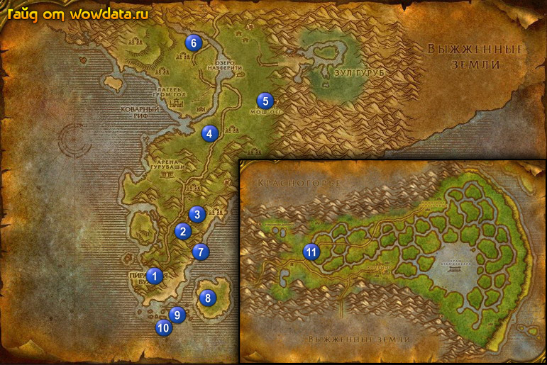

1) Сделайте Пиратская бухта вашим домом.
2) Закончите <Назад в Пиратскую бухту> и <Потерянный грог Алкача Виски>.
3) Закончите <Ром для Маккинли> у морского волка.
4) Начните <Лихорадка Тернистой долины> 1 (28, 77) под перевернутой носовой частью лодки.
5) Закончите квесты которые у вас в бути бае (если есть).
6) На пирсе начните <Сундук капитана> 1 (27, 74).
7) Идите бить горилл 2 (34, 63) для квеста <Лихорадка Тернистой долины> - надо собрать 10 [Клык гориллы], потом поговорите с доктором 3 (35, 61). Теперь отбивайте набеги мартышек, в 3 волне будет белая, сердце которой нам и нужно.
8) Идите убейте Король Бангалаш 4 (38, 34) для <Охотник на крупную дичь>, учтите что он саммонит 33 лвл миньонов.
9) Идите бейте элитных огров 5 (48, 25), пока не выпадет [Ключ Мори] для квеста <Вскрыть ногу Моури>.
10) Идите в 6 (35, 10) и закончите <Охотник на крупную дичь>.
11) Вернитесь в Пиратская бухта.
12) Закончите <Лихорадка Тернистой долины> и <Вскрыть ногу Моури> недалеко от постоялого дома.
13) Идите на восток от Пиратская бухта (на пляж) и открывайте , пока не начнете квест <Послание в бутылке>.
14) Идите убейте Горлаш 7 (36, 69) для квеста <Сундук капитана>, он 47 элитный. Убить его не просто так что используйте все примочки вашего класса.
15) Пока ищите Горлаш можете закончить <Послание в бутылке> 8 (39, 81) – след. части игнорируйте.
16) Идите делать <Пираты Кровавого Паруса> : 9 (33, 87), 9 (30, 88),
10 (31, 90). В общем если координаты не совпадают то все на этих трех кораблях, воть.
Заодно найдите свиток (я нашел у Fleet Master Firallon, но он может быть в любой части, любого корабля) и начните квест <Загадка Кортелло>.
17) Вернитесь в Пиратская бухта .
18) На пристани закончите (там где на корабль садитесь) <Сундук капитана>.
19) В постоялом доме поднимитесь на верх и закончите <Пираты Кровавого Паруса>.
20) Летите в Штормград, закончите <Рапсодия о болоте>. Игнорируйте следующую часть.
21) Летите в Сумеречный лес.
22) Бегите на восток в Болто Печали.
23) Следуйте по дороге до моста 11 (22, 48). Под мостом найдите Промокший свиток, который заканчивает <Пойманная принцесса> и начинает <Загадка Кортелло>.
24) Бегите в Выжженные земли.